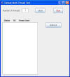

Tymeac Testing Class,
com.tymeac.demo.jframe.TyDemoT3
This source code supplied class demonstrates Tymeac functionality.
This Class is a complement to the Demonstration System.
The Swing Class was generated with Sun's NetBeans5.0. If you wish to change the source, then you should use NetBeans. We supply both the source and form files for you.
In order to execute this class, you also need the supplied NetBeans jar file in the classpath,
swing-layout1.0.4.jar
The script we supply has this in the classpath.We supply this jar file in the classes\lib directory. The script file for this class includes the additional jar file in the classpath.
To build this class using Eclipse or another IDE, copy the classes\lib directory to your project. Such as:
\workplace\YourProject. Then add the additional jar file to the project.If this proves too much to handle, we supply the old source in the directory: \Source\com\tymeac\demo\jframe\OldDemoGui.
 (click to link to full image)
{kind=link}
Elements:
Number of Threads: Enter any digits from 1 to ??. Where ?? is up to the maximum load your system can sustain of threads (T3Thread). Each thread does multiple requests to Tymeac.
One should carefully consider the processor limits for cycles, RMI connections, and storage in determining the number of threads to start.
What to do if you start too many:
- Close this window. The frame closing method calls System.exit(0) which ends the Java Virtual Machine with all the threads.
- Use an operating system tool to kill the java process. This ends the Java Virtual Machine with all the threads.
- Shut down Tymeac Server. The loop is broken in each thread when the return code from Tymeac Server is non-zero.
List: This displays information about each of the threads:
Status: "Working" or "__Fini__".
RC: The return code from Tymeac, or, 9000 for a connection error and 8xxx from the full_checking variable
(see below in Class com.tymeac.demo.jframe.TyDemoT3Thread.)Times used: The number of times the thread, T3Thread, completed normally, (with return code zero).
The Demonstration ships with an average number of threads and Wait Lists for the Queues. There is always the balance of load to resources. If the resources are insufficient for the load, then increase the resources. The return code from Tymeac indicates either success or failure.
When the failure is due to a shortage of Wait List entries, (scheduling failure):
First determine which Queues require more Wait List entries.
- The return code, for scheduling failures, includes the Queue number of the failing Queue, or
- You may use the Wait List Display Class, TyWlData. When a Wait List had a secondary overflow and there is no subsequent Wait List, then the number of secondary overflows for that Wait List is the number of requests that failed scheduling.
Use the Que Data Display/Update to temporarily increase the number of Wait Lists in this Queue.
When the failure is due to a shortage of threads, (scheduling failure): then update the Queue Class and recompile. You must then shutdown and restart Tymeac.
Buttons:
START:
After filling in the number of threads to start, press this button to begin processing. Thread scheduling begins and the List, (above) displays. Since there is a delay, (about 1/2 second), between starting each thread, the List may show number of times used of zero (0) for some threads. As each new thread becomes active and does a request, it fills in the number of times used. Use the Refresh Button, below, to see this.STOP:
Press this button to terminate processing. Processing is complete when the status of all threads is "__Fini__".REFRESH:
Press this button to refresh the List.
Class com.tymeac.demo.jframe.TyDemoT3Bean is a complement to T3.
public int getStartResult() -- Accessor. Returns the result of the startButton. 0-NG 1-OK.
public void refreshButton() -- Updates the List.
public void startButton() -- Initializes the TyDemoT3Base Class that starts all the threads. Calls the refreshButton to display the list.
public void stopButton() -- Calls the shutdown method in the TyDemoT3Base Class.
Class com.tymeac.demo.jframe.TyDemoT3Base is the base storage for the test.
constructor -- Initializes the common array. Starts the TyDemoT3Instant thread.
public int[][] getList() -- Accessor. Returns the base array.
public boolean getShutdown() -- Accessor. Returns the shutdown status.
public synchronized void setDone() -- Mutator. Sets the individual thread finished.
public void setShutdown() -- Mutator. Sets the global shutdown indicator.
public synchronized void setUpdate() -- Mutator. Updates the individual thread data. See the note in the code about Synchronization.
Class com.tymeac.demo.jframe.TyDemoT3Instant is the thread that starts all the working threads for the test. Without this intermediate thread, the List would remain empty until all the threads start. With this intermediate thread, after the TyDemoT3Base constructor starts this thread, it can return immediately.
constructor -- Saves the instance fields.
run() -- Waits 500 milli-seconds, (you may need to increase this if threads fail to get a connection.) Starts the TyDemoT3Thread thread.
Class com.tymeac.demo.jframe.TyDemoT3Thread is the individual thread.
Instance variable private boolean full_checking = false; Default setting.
Set to true it randomly develops a passed input to Tymeac and checks for proper results from Tymeac. A lot of overhead.
Set to false, a null input is passed to Tymeac. This eliminates work on the server side and all checking on the client side.Instance variable private boolean new_priority= false; Default setting.
Set this to true to enable this thread to calculate a new priority for each request. The priority is generated randomly.
When testing priority wait lists, this is usefull.
Set this to false to disable calculating a new priority for each request.
A value of 1 is passed as the priority to the Server for every request.constructor -- super(with name TyT3- + seq #). Set up the TymeacParm. Get an instance of TySvrComm.
public void run() -- This is a continuous loop until shutdown or the return code from the Tymeac Server Request is not zero. Do a request. All seven Demonstration System functions are used. Comment/Uncomment the sequence suitable for your installation.
private int syncRequest()
private int asyncRequest() -- Do a request to Tymeac. The return string [cast from an Object] from Tymeac is: Tymeac XX(nnnn) + additional information. Where XX is SR for syncRequest and AR for asyncRequest. nnnn is the Tymeac return code. Zero is normal. Others are found in Tymeac Return Codes. 9000 is for an invalid return Object.